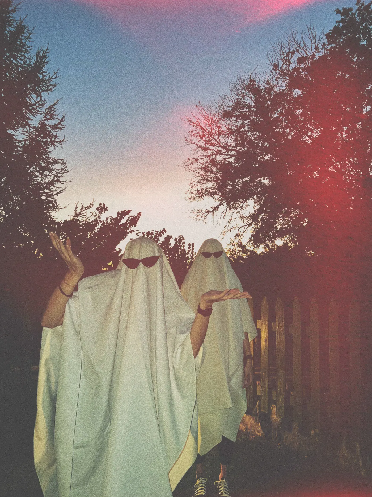
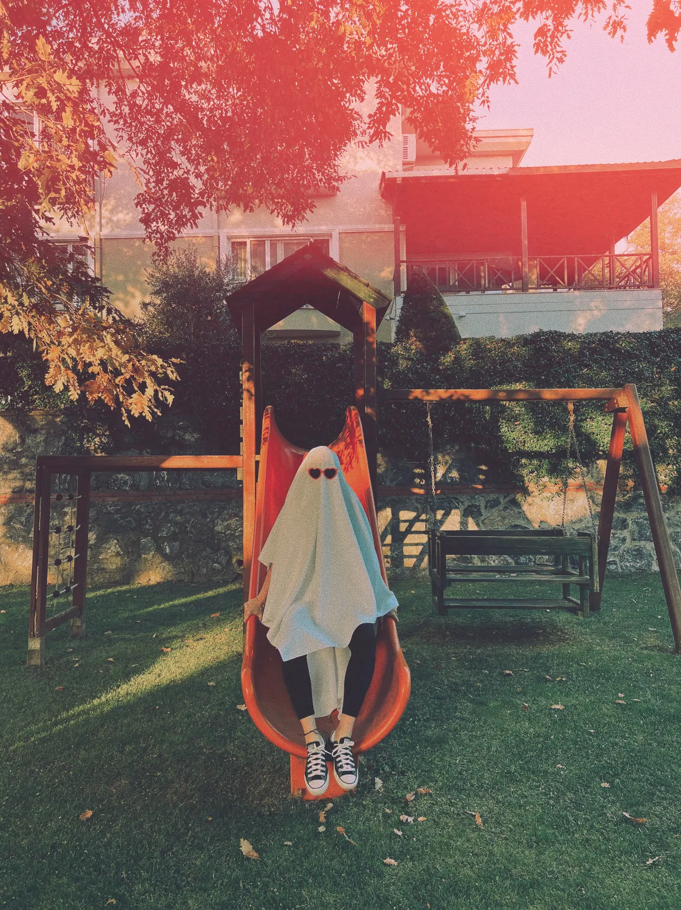
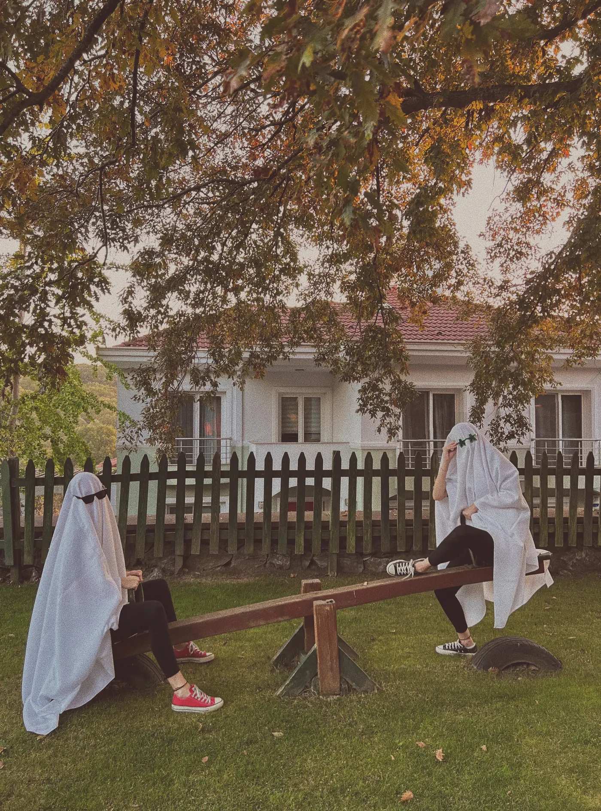

How do you make a sheet ghost costume?
Drape it, mark the eyes, cut, trim. It takes about 15 minutes, with no sewing. An old white sheet is perfect, and a cheap one from a charity shop works just as well.
- Drape the sheet over your head. Stand in your shoes, with a friend helping. Adjust it so it hangs evenly all around.
- Mark your eyes. Have your friend lightly mark each eye with a pencil from the outside.
- Cut the eye holes. Take the sheet off first, and never cut while wearing it. Start small and widen them if needed. Ovals look friendlier than circles, and two vertical slits look eerier.
- Trim the hem. Wearing it again, mark anywhere it would touch the ground or your shoes, then cut. An uneven, slightly torn edge suits a ghost well.
- Add a head shape. A baseball cap, a beanie or a bike helmet under the sheet stops it sliding and gives you a clean, round top.
Optional: draw on the eyes with black fabric marker or felt, so there is an obvious face even if the holes are small.
What size sheet do you need for a ghost costume?
Measure from the top of your head to where you want the hem, then double it. A twin or single gives most adults a mid-calf ghost that shows off the shoes; a queen hangs longer and fuller.
| Wearer | Sheet | Typical size | Tip |
|---|---|---|---|
| Toddler or small child | Cot sheet or cut-down twin | About 110 × 150 cm | Hem above the ankle, wide eye holes |
| Older child | Twin or single | About 170 × 245 cm | Trim plenty off the length |
| Most adults, shoes showing | Twin or single | About 170 × 245 cm | Stops around mid-calf, the look in these photos |
| Adults, longer and fuller | Queen | About 230 × 260 cm | Trim the sides if there is too much fabric |
| Tall adults | King, turned sideways | About 275 × 260 cm | Use the long side from front to back |
Sizes vary by country and brand, so measure yours. Choose flat, not fitted, because the elastic corners of a fitted sheet will fight you. Thin cotton is easiest to breathe through.
What are the best ghost costume styles?
There are four easy versions: the classic, the sunglasses ghost, the cute ghost and the elegant shroud. All four start with the same sheet.
- Classic: plain white with two eye holes. Nothing else is required.
- Sunglasses ghost: no eye holes if you are only posing. Wear sunglasses on top and the coolest shoes you own. This is the ghost photoshoot look.
- Cute ghost: felt eyes and a small "o" mouth, with a bow or a bucket for sweets.
- Elegant shroud: a floaty white dress or tulle, with grey makeup and no sheet on the face. Good if you plan to eat, drink or dance.


What are good ghost costumes for adults?
For a party, make sure you can eat, drink and see. Larger eye holes, a sheet that stops at the knee, and a detail that makes the joke help a lot.
- Add a job: a ghost with a laptop lanyard and coffee is the "ghost employee". A name badge reading "Hello, I was Dave" works too.
- Couples and groups: match the sunglasses, or be a family of ghosts in size order.
- Make it drinkable: cut a small mouth flap or carry a straw. Or wear the sheet from the shoulders once you have got your photos.
- Plan for heat: a sheet gets warm indoors after an hour, so wear something light underneath.
How do you make a ghost costume for kids?
Keep it short, keep their face visible and make it easy to take off. A child's costume must never drag or block their sight.
Cut the sheet so it stops above the ankles, or use a large white T-shirt or a poncho shape that leaves the head free, with white face paint in place of a covered face. Make the eye holes generously wide and check them while your child looks left, right and down. For younger children, the poncho version is safer and they are less likely to pull it off.
How do you make a Charlie Brown ghost costume?
Cut far too many eye holes. In the 1966 special It's the Great Pumpkin, Charlie Brown, Charlie Brown's costume is a sheet full of holes because he "had a little trouble with the scissors".
Make the classic sheet ghost, then cut 15 to 25 uneven holes all over the front, keeping the two real eye holes where you can see through them. Wear a striped zig-zag T-shirt underneath if you want the joke to land, and carry a bag with a rock in it for anyone who knows the film.
How do you make a sheet ghost costume safe?
The main risks are tripping, poor vision and fire. Trim the hem, test the eye holes, keep well away from candles, and never use plastic to cover anyone's head.
- Fire: long loose fabric catches on candles and jack-o'-lanterns. The US Consumer Product Safety Commission has long warned about homemade costumes and recommends fabrics that resist burning, and battery lights instead of candles.
- Tripping: the hem should clear the shoes, all the way round, including on steps.
- Vision: test the eye holes at home, with stairs. CPSC advice is that masks should allow full vision and that nothing should slip over a child's eyes.
- Breathing: use only thin, breathable fabric, and never plastic. Lift the sheet if you feel hot or dizzy.
- Night visibility: white helps, but add reflective tape or carry a torch if you are walking near roads.
How do you get a good photo of your ghost costume?
Take it outside at sunset, get low and put the ghost somewhere ordinary. A costume that took 15 minutes can give you a post that stands out from every other costume selfie.
The full method, with 12 poses, is in how to do a ghost photoshoot. You might also like these Halloween picture ideas and Halloween captions for when you post it.
Frequently asked questions
How do you make a ghost costume out of a sheet?
Drape a white flat sheet over your head, mark your eyes in pencil, take it off and cut two small holes, then trim the hem so it clears your shoes. No sewing is needed.
What size sheet do I need for a ghost costume?
Measure from the top of your head to the hem you want and double it. A twin or single fits children, and gives most adults a mid-calf ghost. A queen hangs longer and fuller.
How do you keep a ghost sheet from sliding?
Wear a baseball cap, a beanie or a bike helmet under it. A couple of safety pins into the cap will hold it firmly.
How do you make a ghost costume without cutting the sheet?
Wear sunglasses over the sheet and skip the eye holes. This suits photos but not walking around, as you won't see much.
What was on Charlie Brown's ghost costume?
Far too many holes. In the 1966 Peanuts special, his sheet ghost has holes all over because he had trouble with the scissors.
Got the costume? Make the post
DUMP picks your best Halloween shots on your iPhone, lets you reorder them and saves your originals to a new Photos album in order. Free on iPhone and iPad, no account.
 On a computer?Scan with your iPhone camera
On a computer?Scan with your iPhone camera
Free · iPhone & iPad · iOS 18.6+ · No account · Works offline
The ghosts in these photos are plain white sheets and sunglasses, nothing more. It really is that easy, so go and raid the linen cupboard.
Indie iOS developer, and the maker of DUMP. Say hello on Instagram or at solostaseraofficial@gmail.com.
Sources
- US Consumer Product Safety Commission, 2003 and 2006: flame-resistant fabrics, full visibility, and the risks of homemade costumes. These are long-standing guidance, not new rules.
- It's the Great Pumpkin, Charlie Brown (CBS, 1966): the sheet ghost with too many holes. See Wikipedia.
- Sheet sizes are typical and vary by country and brand. All photos are our own, by @solo.stasera. DUMP facts were checked against the source code of DUMP 3.0.1, the version on the App Store on 1 Nov 2026.